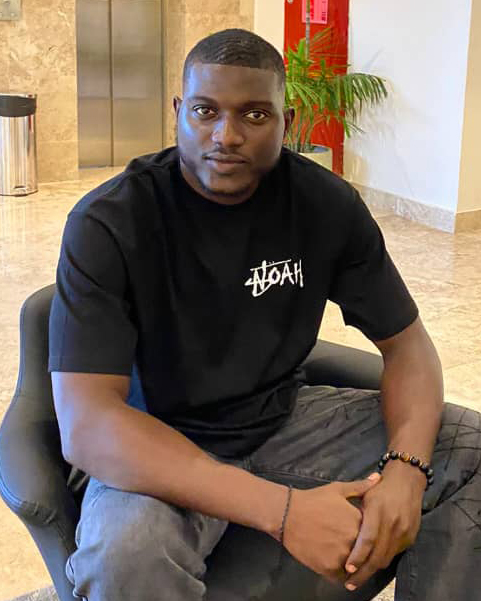

Akinrelere, Ayodamope Akinbisola
Software Engineering Student at AltSchoolAfrica
Altschool Student ID: ALT/SOE/023/3254

Biography
Akinrelere Ayodamope is the last child of three boys and hails from Ondo State, Nigeria.
He has a B.Eng in civil Engineering from the Federal University of Agriculture, Abeokuta.
His goal is to apply a creative approach in problem solving techniques to improve the day-to-day activites of a common man.
Ayodamope is passionately interested in Cloud Engineering. He is currently a lead photographer at SAFEPHOTOGRAPHY.
Reason For Joining AltSchoolAfrica
Akinrelere Ayodamope joined AltSchoolAfrica to get more Cloud computing knowledge and skills, especially skills like linux, ansible and terraform.
with the aim to break into big tech companies within and outside Nigeria.